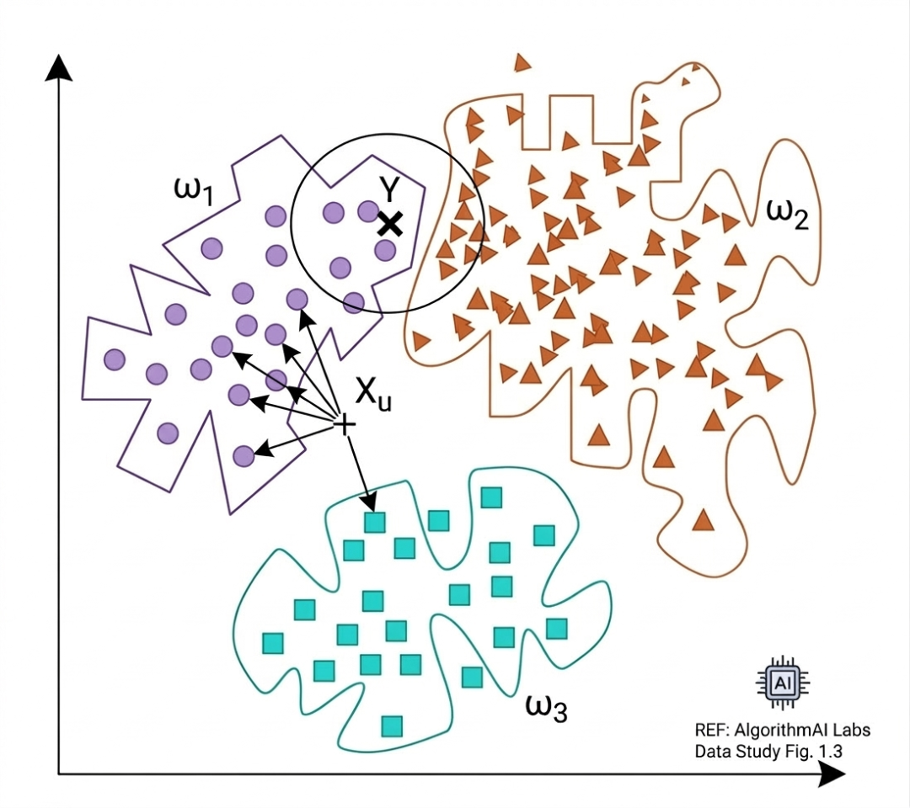
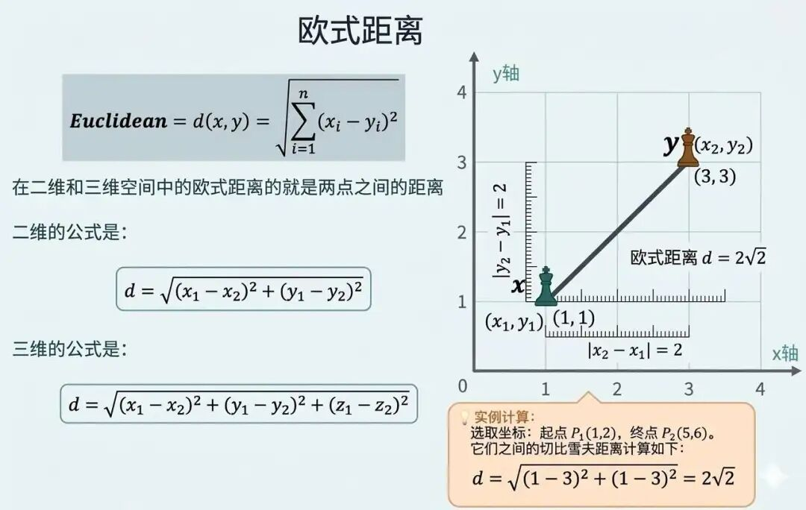
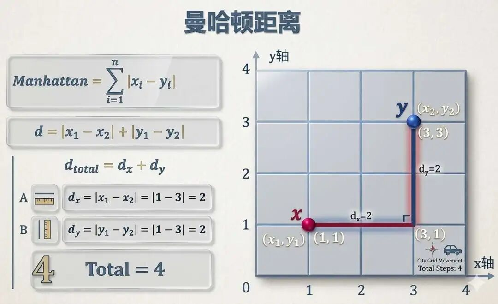
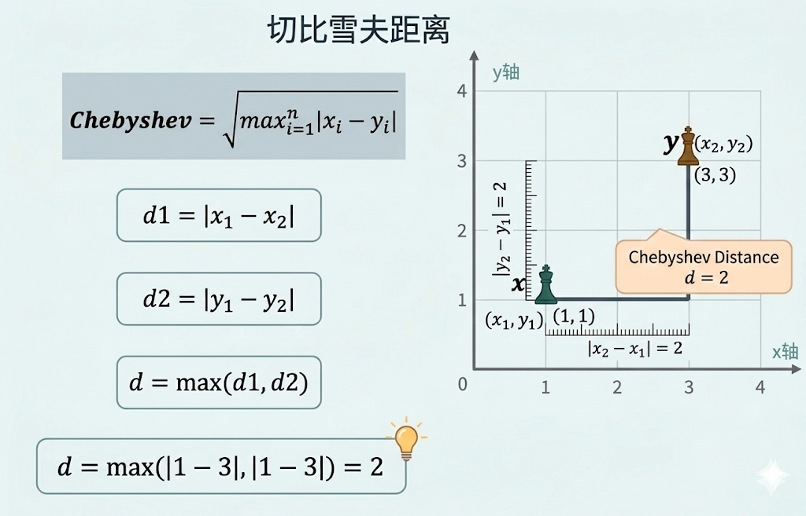
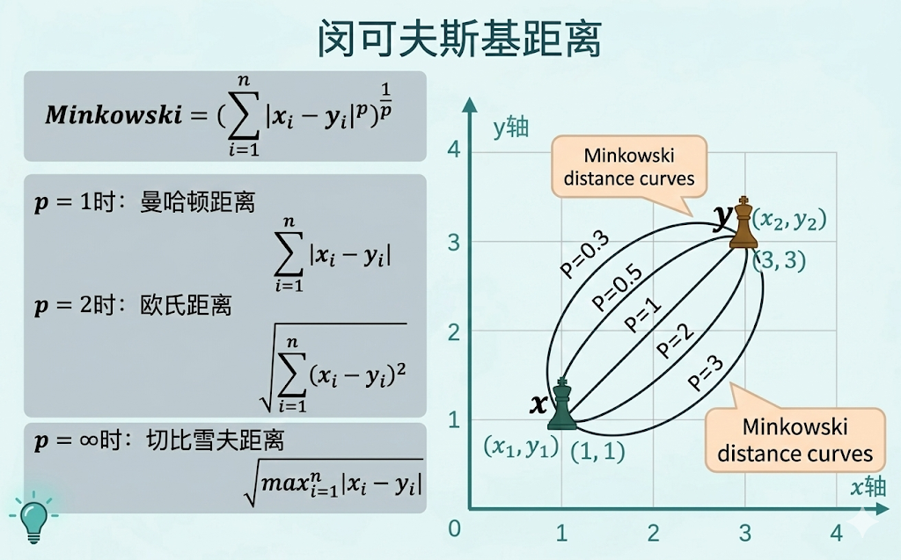
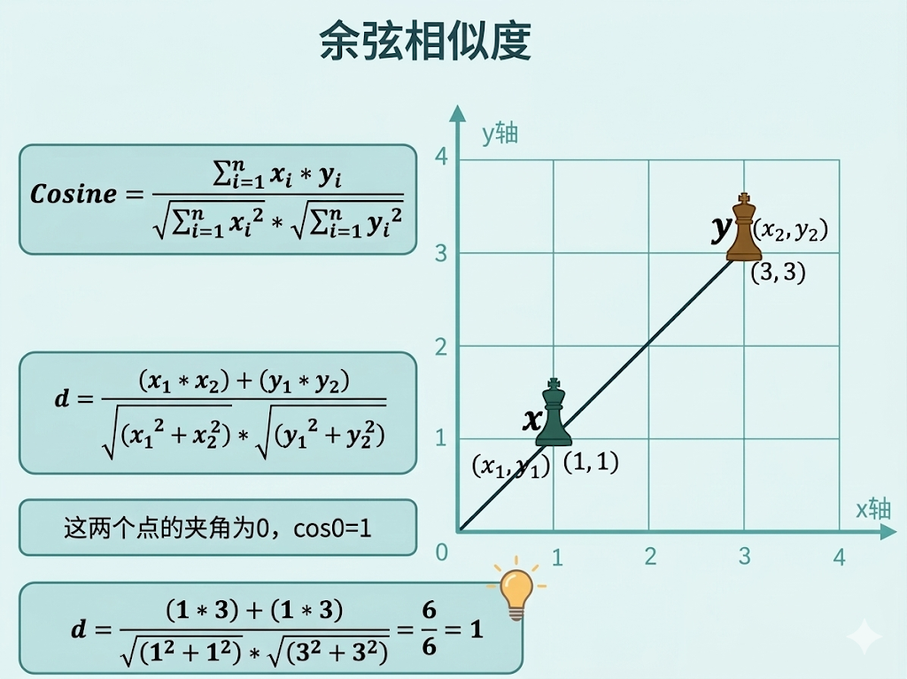

“给时光以生命，给岁月以文明”—《三体》刘慈欣
K邻近算法，即KNN，是机器学习中的一种分类算法，其核心原理是基于“物以类聚”的思想，即相似的样本在特征空间（例如直角坐标系或者空间坐标系）中的距离也较近。

K指的是是用户指定的参数，代表在分类或回归时参考的样本空间中最近邻的 K 个样本数量，它直接影响模型的决策边界和泛化能力。
“邻近”不如叫“近邻”，指的是通过距离度量在特征空间中寻找与目标样本最相似的K个样本。距离定义直接影响邻居的选择。
我们通过下面的一个简单例子就能马上理解“K 邻近”算法。
假设我们想对苹果、火龙果、板栗进行分类，我们通过对数据集进行处理，采集到这些特征：水果的重量（克）、是否有刺（用数值表示，有刺=1，无刺=0）、颜色（用数值表示，红色=1，棕色=0）。
注：k 邻近算法也可用于回归任务，例如 预测房价时，取最近三套相似房源价格平均值。
假设训练集里面就包含以下样本：
我们的任务是要针对这样一个待分类样本进行分类，待分类样本：{重量: 80, 是否有刺: 1, 颜色:0}。
在运用k邻近算法之前，我们需要对数据进行处理，常见方法包括归一化和标准化，主要是归一化，主要目的是统一数据的量纲差异，使得每个特征可以公平的参与距离计算，以下是将数据映射到0～1区间后的结果：
| 样本类型 | 原始特征 (重量, 是否有刺, 颜色) | 标准化后特征 |
|---|---|---|
| 苹果1 | (200, 0, 1) | (1.0, 0.0, 1.0) |
| 苹果2 | (180, 0, 1) | (约0.89, 0.0, 1.0) |
| 火龙果1 | (160, 1, 1) | (约0.78, 1.0, 1.0) |
| 火龙果2 | (120, 1, 1) | (约0.56, 1.0, 1.0) |
| 板栗1 | (20, 1, 0) | (0.0, 1.0, 0.0) |
| 板栗2 | (50, 1, 0) | (约0.17, 1.0, 0.0) |
| 待分类样本 | (80, 1, 0) | (约0.33, 1.0, 0.0) |
注：归一化公式为：(原始值 - 最小值) / (最大值 - 最小值)。
K邻近算法的本质是通过距离的计算在特征空间中寻找与待测样本最接近的样本。
这个特征空间，跟我们之前讲的向量空间（第5讲）是差不多的概念，也是通过距离来计算两个向量的相似性，从而判断是否是一类，只不过这里是待测样本的特征向量和多个特征空间中的向量来比较相似性。
一般来说，在使用k邻近算法的时候，有三种距离比较高频的使用，它们分别是欧氏距离、曼哈顿距离、闵可夫斯基距离。
注：除了这三种距离还有余弦距离、切比雪夫距离、汉明距离等。在第5讲《机器学习核心思想（一）万物皆可向量》有过详细论述。
欧氏距离是几何空间中两点之间的最短直线距离，类似于用尺子直接测量两点间的实际长度，肉包子打狗，狗绝对不会绕弯去追，而是直奔地上的肉包子。它是KNN中最常用的距离度量方式，适用于连续型数据，如身高、温度、坐标等。
这里我们暂不探讨这几种距离的区别，我们用欧氏距离进行计算一下，即用待测样本和特征空间中的所有样本都进行距离计算，选出K个“最近”的样本。
$$ d = \sqrt{(重量_1 - 重量_2)^2 + (是否有刺_1 - 是否有刺_2)^2 + (颜色_1 - 颜色_2)^2} $$| 训练样本 | 标准化后特征 | 与待分类样本的距离 | 计算说明 |
|---|---|---|---|
| 板栗2 | (0.17, 1.0, 0.0) | $d = \sqrt{(0.33-0.17)^2 + (1.0-1.0)^2 + (0.0-0.0)^2} \approx \mathbf{0.16}$ | 特征高度接近，距离最近 |
| 板栗1 | (0.0, 1.0, 0.0) | $d = \sqrt{(0.33-0.0)^2 + (1.0-1.0)^2 + (0.0-0.0)^2} \approx \mathbf{0.33}$ | 重量差异稍大，距离次之 |
| 火龙果2 | (0.56, 1.0, 1.0) | $d = \sqrt{(0.33-0.56)^2 + (1.0-1.0)^2 + (0.0-1.0)^2} \approx \mathbf{1.03}$ | 颜色差异大，距离变远 |
| 火龙果1 | (0.78, 1.0, 1.0) | $d = \sqrt{(0.33-0.78)^2 + (1.0-1.0)^2 + (0.0-1.0)^2} \approx \mathbf{1.10}$ | 重量和颜色差异都大 |
| 苹果2 | (0.89, 0.0, 1.0) | $d = \sqrt{(0.33-0.89)^2 + (1.0-0.0)^2 + (0.0-1.0)^2} \approx \mathbf{1.50}$ | 三个特征均有明显差异 |
| 苹果1 | (1.0, 0.0, 1.0) | $d = \sqrt{(0.33-1.0)^2 + (1.0-0.0)^2 + (0.0-1.0)^2} \approx \mathbf{1.64}$ | 特征差异最大，距离最远 |
根据以上的距离计算结果，我们可以对 $k$ 在不同取值下，对分类结果进行投票表决：
(1) 当 K=1 时，最近的邻居是：板栗2，投票结果：板栗 (1票)，预测类别：板栗
(2) 当 K=3 时，最近的3个邻居是：板栗2, 板栗1, 火龙果2，投票结果：板栗 (2票) > 火龙果 (1票)，预测类别：板栗
(3) 当 K=5 时，最近的5个邻居是：板栗2, 板栗1, 火龙果2, 火龙果1, 苹果2，投票结果：板栗 (2票), 火龙果 (2票), 苹果 (1票)
结果：出现平票（板栗 vs 火龙果）。
在这种情况下，常见的解决方法是优先考虑距离更近的样本，即查看这5个邻居中，板栗和火龙果哪一类的总体距离更近。
计算可知，两个板栗样本的距离和为 0.49，两个火龙果样本的距离和为 2.13，板栗类更近，因此最终仍可以判断为板栗。
实际中，人们往往会优先尝试奇数的 K 值，因为这样在二分类问题中可以降低平票的概率；但需要注意的是，在多分类问题里，即使 K 是奇数，也仍然可能出现平票，因此还需要结合距离加权等策略来处理。
这说明 $K$ 值越小，模型越关注局部特征；$K$ 值越大，决策越偏向全局模式，$K$ 值的选择是个难点，用小 $K$ 易受噪声干扰，导致过拟合，大 $K$ 又可能忽略局部特征，导致欠拟合，所以 $K$ 要合适才行。
通过上面这个例子，相信大家对K邻近算法有了一个比较具象化的认知，但要很好的运用K邻近算法，我们需要重点解决以下问题。
我们拿到某一份样本集的时候，由于数据中不同特征的量纲差异大，例如年龄范围0-100，收入范围0-100万，如果不进行处理，直接计算距离会导致数值大的特征主导最终结果；
针对这个问题我们可以采用标准化，或者是归一化的方法来解决，它可以将所有特征缩放到同一尺度。
例如用Z-score标准化（公式：(原值-均值)/标准差），将身高和体重统一为均值为0、标准差为1的分布。
具体来说，比如假设该数据集中的年龄范围是 0～100岁，把最大值100看作是1，那么10就是0.1，11就是0.11，30就是0.3；
同样针对于收入范围也是一样，找到最大的收入和最小的收入，比如收入范围是 0～1000 万，那么 1000 万看作是1，那么 100 万就是 0.1，10 万就是 0.01，以此类推。
这样通过标准化/归一化，就把所有数据全部映射在了 0～1 之间，也就不存在量纲差异了。
在 k 值相同的情况下，我们在采用不同的距离公式计算的时候，有可能得到不同的结果；同样的，当使用同一个距离公式的时候，不同的 $k$ 值，得到的结果也会不一样。
$K$ 值太小容易受噪声干扰，比如邻居恰好是异常点，而K值太大，又可能忽略局部特征；
所以我们首先来解决最优 $K$ 值的问题，我们可以使用交叉验证的方式，将数据分成5份，轮流用4份训练、1份验证，选平均准确率最高的K值。例如测试 $K=3/5/7$ ，发现 $K=5$ 时分类最准，那就可以将5当做最优 $K$ 值。
另外一个是距离公式的最优问题，一般来说距离公式有其特定的使用场景，下面将介绍每种距离公式的特点。



灵活适应不同需求，通过参数 p 调整距离类型：
比如：在需要动态调整距离权重时（如某些回归任务），设置 p=3 可平衡欧氏和曼哈顿的特性。


以上是主要的距离公式的适用场景和特点，具体哪种距离计算的效果更好，在应用的时候需要分别去尝试。
当数据中某一类样本过多（如垃圾邮件检测中正常邮件占90%），可能导致在使用K邻近算法分类的时候，结果偏向数量多的类别。
我们可以通过加权投票或者是过采样来解决这个问题：
加权投票：让距离更近的邻居拥有更高的投票权重。例如距离最近的3个邻居（权重3:2:1），少数类可能逆袭。
过采样：复制少数类样本或生成新样本，使其数量提升。例如医疗数据中癌症患者仅占5%，通过复制使其占比提升到30%。
我们得到的样本可能还存在这样的问题，特征过多（如文本分类中每个词是一个特征）导致计算慢且噪声干扰大。我们可以使用降维的方式来解决：
主成分分析：主成分分析即主要成分提取，将1000维词向量压缩到50维，保留主要信息。例如新闻分类中，PCA后准确率仅下降2%，但计算速度提升10倍。
特征选择：或者直接删除冗余特征。例如预测糖尿病时，发现“体重指数”影响大，而“患者ID”无关，直接剔除。
class KNN:
def __init__(self, k=3, 距离度量='欧氏'):
"""
初始化参数：
- k: 近邻数量，默认3
- 距离度量: 支持'欧氏'（欧氏距离）、'曼哈顿'（曼哈顿距离）等
"""
self.k = k
self.距离度量 = 距离度量
self.训练特征 = None
self.训练标签 = None
self.最小值 = None
self.最大值 = None
def 数据归一化(self, 特征集):
"""
将特征缩放到[0,1]区间，避免量纲差异主导距离计算。
公式：新值 = (原值 - 最小值) / (最大值 - 最小值)
"""
return (特征集 - self.最小值) / (self.最大值 - self.最小值)
def 计算距离(self, 样本A, 样本B):
"""根据设定的距离度量计算两个样本间的距离"""
if self.距离度量 == '欧氏':
return np.sqrt(np.sum((样本A - 样本B) ** 2))
elif self.距离度量 == '曼哈顿':
return np.sum(np.abs(样本A - 样本B))
else:
raise ValueError("暂不支持此距离度量")
def fit(self, 训练特征, 训练标签):
"""
KNN的“训练”过程并不是学习一组复杂参数，
而是把训练数据保存下来，并做好必要的预处理。
"""
self.最小值 = 训练特征.min(axis=0)
self.最大值 = 训练特征.max(axis=0)
self.训练特征 = self.数据归一化(训练特征)
self.训练标签 = 训练标签
def predict(self, 测试样本):
"""
预测单个测试样本的类别：
1. 先用训练集相同的规则对测试样本做归一化
2. 计算测试样本与所有训练样本的距离
3. 按距离排序，选取前k个最近邻
4. 统计k个近邻的标签，投票决定最终类别
"""
测试样本 = self.数据归一化(测试样本)
距离列表 = []
for i in range(len(self.训练特征)):
距离 = self.计算距离(测试样本, self.训练特征[i])
距离列表.append((距离, self.训练标签[i]))
距离列表.sort(key=lambda x: x[0])
k近邻 = 距离列表[:self.k]
投票箱 = {}
for 距离, 标签 in k近邻:
投票箱[标签] = 投票箱.get(标签, 0) + 1
return max(投票箱.items(), key=lambda x: x[1])[0]
if __name__ == '__main__':
训练特征 = np.array([
[200, 0, 1],
[180, 0, 1],
[160, 1, 1],
[120, 1, 1],
[20, 1, 0],
[50, 1, 0]
])
训练标签 = ['苹果', '苹果', '火龙果', '火龙果', '板栗', '板栗']
测试样本 = np.array([80, 1, 0])
knn模型 = KNN(k=3, 距离度量='欧氏')
knn模型.fit(训练特征, 训练标签)
预测结果 = knn模型.predict(测试样本)
print(f"测试样本被分类为：{预测结果}")特征（Feature）：指用来描述样本的可观察信息或属性。例如在水果分类中，重量、颜色、是否有刺，都可以看作是特征。模型就是通过这些特征来判断样本之间是否相似。
特征空间（Feature Space）：指由多个特征共同构成的空间。每个样本都可以看成这个空间中的一个点。样本之间的距离越近，通常表示它们越相似。
向量表示（Vector Representation）：指把一个样本写成一组数字的形式，例如(重量, 是否有刺,颜色)、(重量, 是否有刺, 颜色)、(重量,是否有刺,颜色)。这样一来，机器就可以把样本当成向量来处理，并进一步计算样本之间的距离。
K值（K Value）：指 KNN 在做判断时，要参考多少个最近邻居。K 太小，模型容易被局部噪声影响；K 太大，模型又可能忽略局部特征，所以 K 值需要调节。
近邻（Nearest Neighbors）：指在特征空间中距离目标样本最近的那些样本。KNN 的基本思想就是：一个新样本往往会和它附近的样本更相似。
归一化（Normalization）：指把特征压缩到固定区间内，常见的是映射到 0～1。这样可以消除不同特征量纲差异带来的影响。
标准化（Standardization）：指把数据转换为均值为 0、标准差为 1 的形式。它和归一化目标类似，但做法不同，不能混为一谈。
量纲差异（Scale Difference）：指不同特征本身的数值范围差异很大，例如年龄是几十，收入是几十万。如果不处理，距离计算往往会被大数值特征“带偏”。
投票机制（Voting Mechanism）：指 KNN 在分类时，会统计最近 K 个邻居分别属于哪一类，然后选择票数最多的类别作为预测结果。
加权投票（Weighted Voting）：指不是让每个邻居的票权都一样，而是让距离更近的邻居拥有更大的权重。这样可以让模型更重视真正“贴近”的样本。
平票（Tie）：指在投票时，不同类别得到的票数相同。此时通常需要借助“谁的总体距离更近”或“距离加权投票”等方式来进一步判断。
交叉验证（Cross Validation）：指把数据集分成若干份，轮流用一部分做验证，其余部分做训练，从而评估不同参数设置的效果。它常用于选择更合适的 K 值。
泛化能力（Generalization）：指模型不仅能记住训练数据，还能对新样本做出合理判断的能力。一个泛化能力强的模型，才算真正学会了规律，而不是只会“背答案”。
过拟合（Overfitting）：指模型过度贴合训练数据中的细节和噪声，导致它在新数据上的表现变差。KNN 中，K 太小时更容易出现这种问题。
欠拟合（Underfitting）：指模型过于粗糙，没能学到数据中的有效规律。KNN 中，K 太大时容易把局部差异抹平，从而出现欠拟合。
类别不平衡（Class Imbalance）：指某些类别样本很多，某些类别样本很少。这样会让模型更容易偏向样本多的类别，而忽略少数类。
过采样（Oversampling）：指通过复制少数类样本，或者人为生成新样本，来提高少数类在数据集中的占比，从而缓解类别不平衡问题。